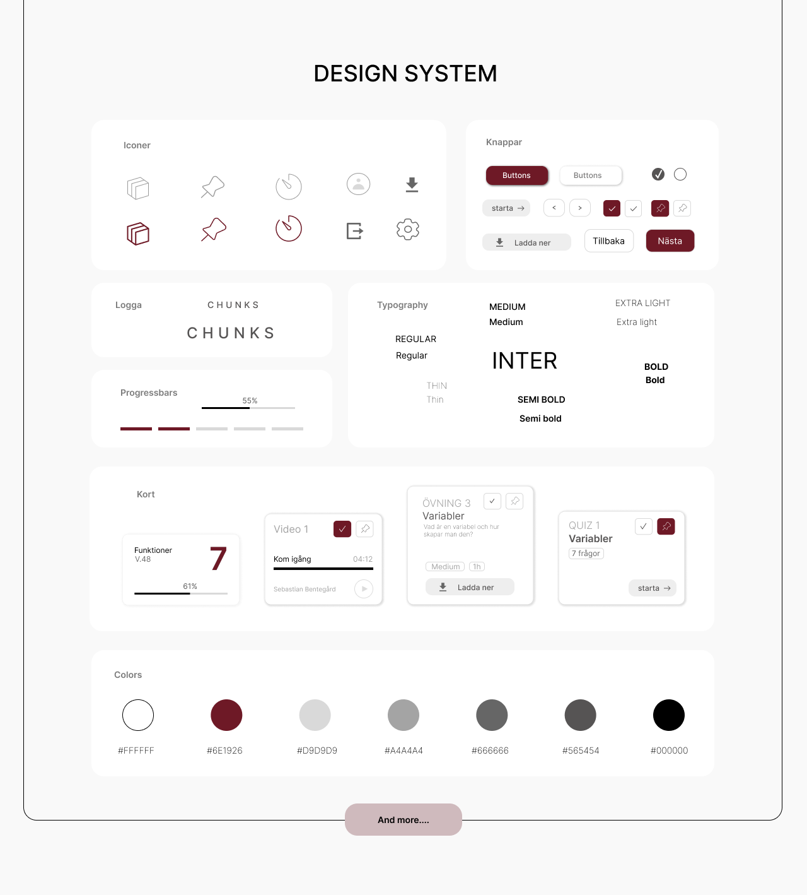
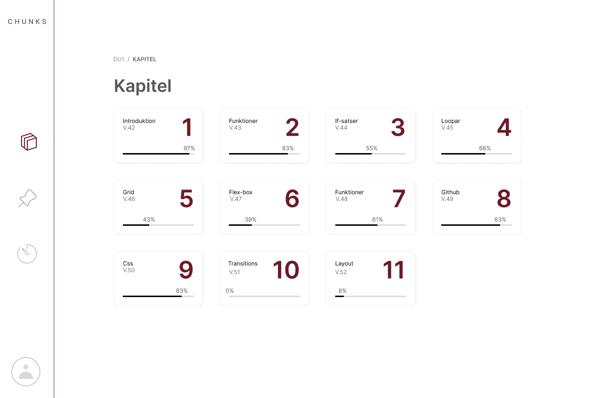
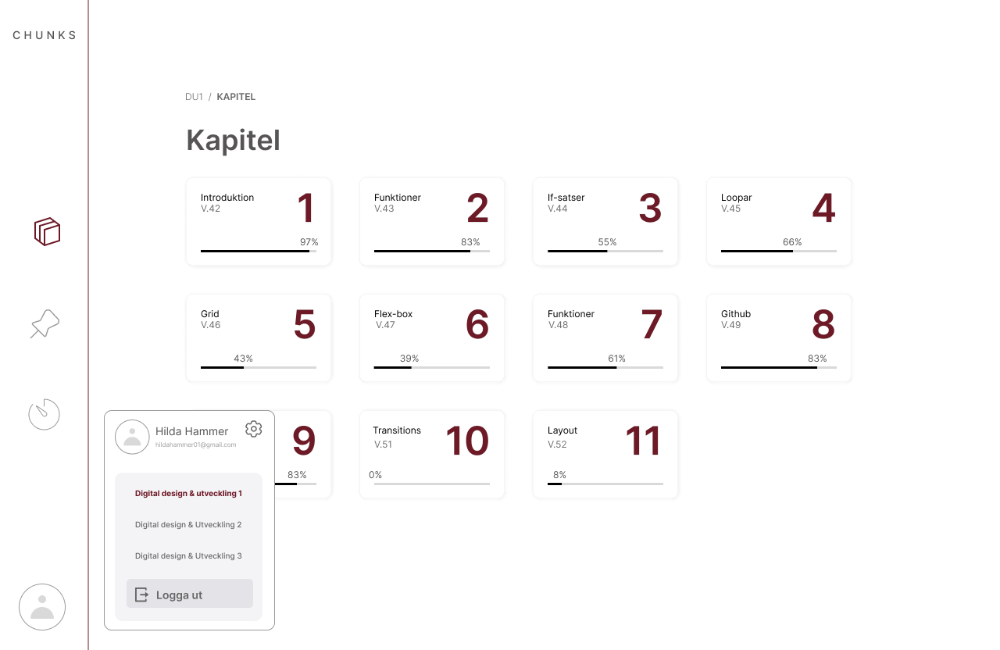
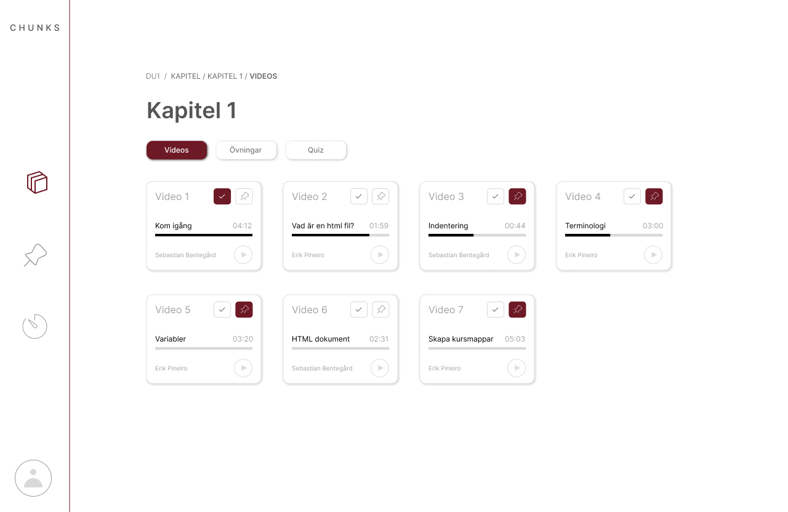
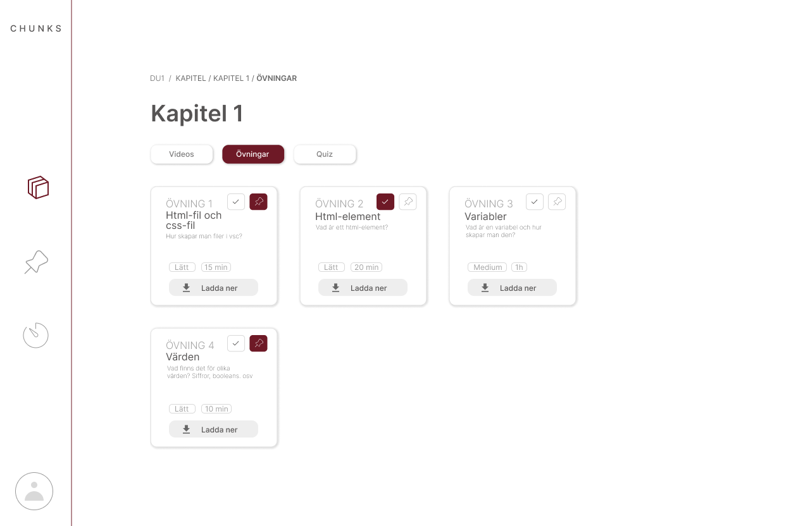
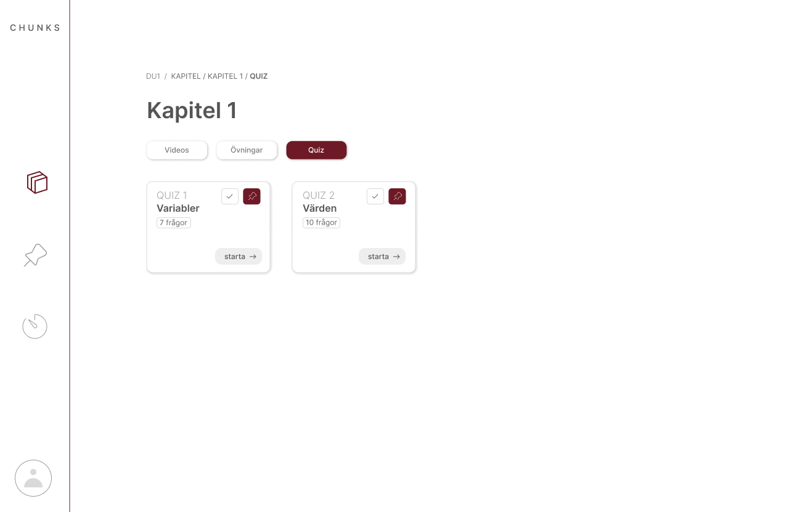
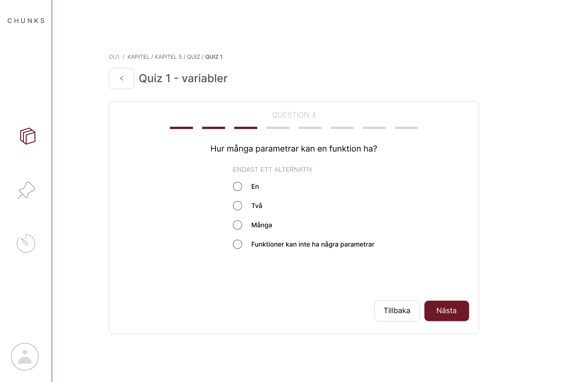
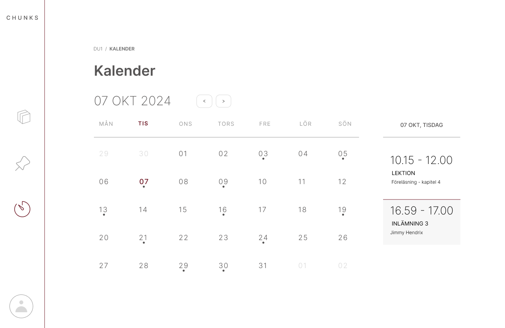

03. chunks
redesigning an educational learning platform for students learning HTML and JavaScript
overview
Chunks was a university project focused on redesigning an existing educational website used by students to learn HTML and JavaScript.
The original platform provided instructional videos and a space for students to take notes, but its visual design and overall structure could be improved. Our task was to rethink the experience and create a more modern, clear and engaging interface.

the challenge
"How might we make the learning experience feel more structured, intuitive and visually engaging while keeping the content easy to access?"
my approach
I focused on improving the visual hierarchy, navigation and overall user experience while creating a more cohesive visual identity. I worked in Figma to explore the layout, UI components and different design solutions before developing the final concept.
To keep the interface consistent across every chapter, video, exercise and quiz, I built a small design system — covering icons, buttons, typography, cards and colours — so new content could be added without the layout ever feeling improvised.

the solution
After logging in, students land on a chapter overview — every chapter as its own card, with a progress bar that fills in as videos, exercises and quizzes are completed. It's designed to answer the two questions a student has every time they open the platform: where did I leave off, and what's next?

The profile menu in the top corner keeps course-switching and logout out of the way until needed, without hiding them — a small detail, but one that matters once a student is enrolled in more than one course.

Each chapter is organised into three clear tabs — videos, exercises and quizzes — so students always know where they are and what's left to do. Progress indicators, checkmarks and pinning let students track what they've completed and bookmark what they want to return to.



Each exercise card shows a difficulty level and an estimated time before the student even opens it, so they can plan their own pace instead of guessing how big a task is. Quizzes reuse the same visual language — one question at a time, with instant feedback — to keep testing knowledge from feeling like a separate, more stressful part of the platform.

A calendar view ties the whole platform together, giving students a single place to see upcoming lectures and deadlines alongside the content they're working through.

goal
The goal was to transform the existing platform into a more modern and user-friendly learning environment that makes it easier for students to navigate content, watch instructional videos and take notes.
This was one of my first UX/UI projects, and it taught me how much a clear visual hierarchy and a small, consistent design system can do for an interface — even before any of the harder interaction problems are solved.